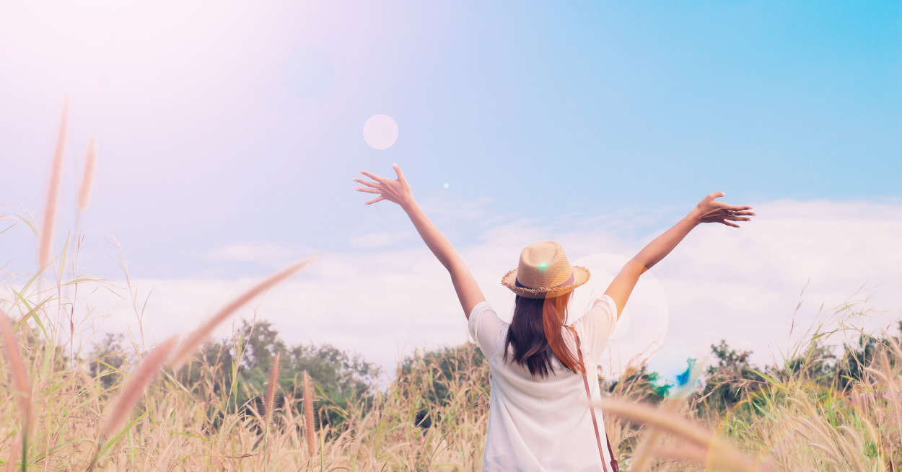

Meer geluk! Dat wil je! Maar het leven loopt niet lekker of lijkt tegen te zitten. Samen gaan we op zoek naar de kern van jouw probleem. Ik help je inzicht te krijgen in hoe je écht in elkaar steekt, zonder alle negatieve overtuigingen die je jezelf hebt opgelegd en zonder de lagen van opvoeding en maatschappij. Weten wie je ten diepste echt bent legt de basis voor jouw geluk. We plannen ongeveer 8 afspraken in waarbij we in kaart brengen wie je bent geworden en door welke bril jij door de wereld kijkt. Welke overtuigingen je hebt, waar en wanneer je bent beschadigd in het leven en hoe we dit gaan herstellen. Dat is namelijk mogelijk. Al snel kunnen we gaan 'opbouwen'. Het leukste gedeelte van de sessies. Jouw levenspad naar geluk is niet langer mistig, maar heb je duidelijk in beeld gekregen. En kun je nu echt handen en voeten gaan geven. Je hebt het inzicht, de zekerheid en kracht in jezelf teruggekregen die je het vermogen geven je eigen leven te ontwerpen. Na het EIGEN GELUK TRAJECT zul je merken dat je je weer krachtig en energiek voelt om te gaan staan en leven zoals jij wilt. Het effect dat je bereikt is blijvend. Na het traject houden we contact om te zorgen dat je op koers blijft. Dat is mijn manier van coachen, zodat jij MEER GELUK blijft ervaren. Kun je niet wachten om je leven een prachtige wending te geven? Plan dan een gratis eerste gesprek in. Ervaar welk effect je in een sessie kunt bereiken en of je een gezamenlijke klik voelt met mij als coach. Er zijn geen lange wachttijden en ik hanteer flexibele tijden. Kies nu voor je EIGEN GELUK!"
Eigen Geluk
Meer geluk? Samen vinden we de oplossing.

Je wilt een leven vol geluk. Maar soms zit je niet lekker in je vel, loop je tegen problemen aan in je leven zoals stress, burn-out, depressiviteit, trauma's, PTSS, rouw, verslaving of andere obstakels die je tegenhouden van een gelukkig leven. Ik geloof in oplossingen en mogelijkheden en ben gedreven om jou naar een leven met veel MEER GELUK te brengen.
Lees meer
